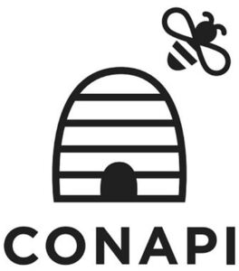

Trade Mark Journal No.2025/031 1 August 2025
WO0000001853127 (5,29,30,35,44)
Office of origin: Italy
Date of International Registration:19 November 2024
Date of designation in the UK:
19 November 2024

The trademark consists of the wording CONAPI in original fancy characters and figurative elements, as per attached logo.
International priority date claimed: 30 October 2024
(Italy)
(302024000161928)
- Class 5
- Dietetic food and substances adapted for medical or veterinary use, food for babies; dietary supplements for human beings and animals; food supplements; herbal food supplements; honey, propolis, and pollen food supplements; royal jelly dietary supplements; oils for use as food supplements; nutritional supplement energy bars; oils for medicinal use; royal jelly for pharmaceutical purposes; herbal honey throat lozenges; throat lozenges; cough lozenges; anti-cough drops; candy, medicated; bee pollen for nutraceutical use; herbal preparations in capsules, drops; syrups for pharmaceutical purposes; cough syrups; throat sprays [medicated].
- Class 29
- Preserved, frozen, dried and cooked fruits and vegetables; jellies, jams, compotes; pollen prepared as foodstuff; nut-based meal replacement bars; fruit-based meal replacement bars; spreads consisting mainly of fruits.
- Class 30
- Flour and preparations made from cereals; bread, pastries and confectionery; chocolate; ice cream, sorbets and other edible ices; sugar, honey, treacle; cereals; ready-to-eat cereals; cereal bars and energy bars; biscuits; petit-beurre biscuits; food mixtures consisting of cereal flakes and dried fruits; granola; caramels [sweets]; fruit coulis [sauces]; sweet spreads; bee products; royal jelly; propolis; honey substitutes.
- Class 35
- Advertising; business administration and management; office functions; business consultancy and advisory services; organization of events, exhibitions, fairs and shows for commercial, promotional and advertising purposes; advertising services to raise awareness of environmental issues and initiatives; advertising services to raise awareness of biodiversity protection; advertising services to raise awareness of bee protection; assistance and advice regarding business organization and management; assistance and consultancy relating to business management and organization; advertising, marketing and promotional consultancy, advisory and assistance services; business advice relating to marketing; promoting the goods and services of others; provision of an online marketplace for buyers and sellers of goods and services; retail services relating to dietetic food and substances adapted for medical or veterinary use, food for babies, dietary supplements for human beings and animals, food supplements, herbal food supplements, honey supplements, propolis supplements, pollen food supplements, royal jelly dietary supplements, oils for use as food supplements, nutritional supplement energy bars, oils for medicinal use, royal jelly for pharmaceutical purposes, herbal honey throat lozenges, throat lozenges, cough lozenges, anti-cough drops, candy, medicated, bee pollen for nutraceutical use, herbal preparations in capsules, drops, syrups, cough syrups, throat sprays [medicated], preserved fruits and vegetables, frozen fruits and vegetables, dried fruits and vegetables, cooked fruits and vegetables, jellies, jams, compotes, pollen prepared as foodstuff, nut-based meal replacement bars, fruit-based meal replacement bars, spreads consisting mainly of fruits, flour and preparations made from cereals, bread, pastries and confectionery, chocolate, ice cream, sorbets and other edible ices, sugar, honey, treacle, cereals, ready-to-eat cereals, cereal bars and energy bars, biscuits, petit-beurre biscuits, food mixtures consisting of cereal flakes and dried fruits, granola, caramels [sweets], fruit coulis [sauces], sweet spreads, bee products, royal jelly, propolis, honey substitutes; wholesale services relating to dietetic food and substances adapted for medical or veterinary use, food for babies, dietary supplements for human beings and animals, food supplements, herbal food supplements, honey supplements, propolis supplements, pollen food supplements, royal jelly dietary supplements, oils for use as food supplements, nutritional supplement energy bars, oils for medicinal use, royal jelly for pharmaceutical purposes, herbal honey throat lozenges, throat lozenges, cough lozenges, anti-cough drops, candy, medicated, bee pollen for nutraceutical use, herbal preparations in capsules, drops, syrups, cough syrups, throat sprays [medicated], preserved fruits and vegetables, frozen fruits and vegetables, dried fruits and vegetables, cooked fruits and vegetables, jellies, jams, compotes, pollen prepared as foodstuff, nut-based meal replacement bars, fruit-based meal replacement bars, spreads consisting mainly of fruits, flour and preparations made from cereals, bread, pastries and confectionery, chocolate, ice cream, sorbets and other edible ices, sugar, honey, treacle, cereals, ready-to-eat cereals, cereal bars and energy bars, biscuits, petit-beurre biscuits, food mixtures consisting of cereal flakes and dried fruits, granola, caramels [sweets], fruit coulis [sauces], sweet spreads, bee products, royal jelly, propolis, honey substitutes.
- Class 44
- Agriculture, horticulture and forestry services; horticulture, gardening and landscaping; floristry; cultivation of plants; tree planting; pruning of trees; tree planting for carbon offsetting purposes; agricultural services relating to environmental conservation; landscape gardening design for others; providing information about agriculture, horticulture, and forestry services; rental of equipment for agriculture, aquaculture, horticulture and forestry; consultancy in the field of agriculture, horticulture and forestry; gardening advice; advisory services relating to the design of gardens; animal breeding; insect farming services; beekeeping services; rental of animals and plants; rental of beehives; forest habitat restoration; reintroduction and conservation of wildlife; advisory services relating to the care of animals.
CONAPI Soc. Coop. Agricola
Representative: Wynne-Jones IP Limited, Southgate House, Southgate Street Gloucester Gloucestershire GL1 1UB UNITED KINGDOM